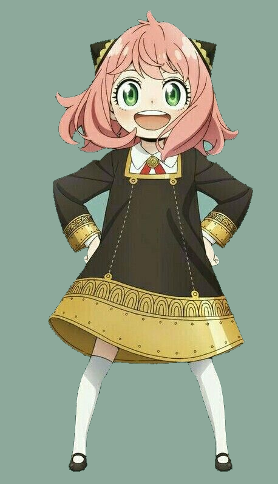

Relationships

Loid Forger(Father)

Yor Forger(Mother)

Bond Forger(Pet)

Yuri Briar(Uncle)
Anya Forger
Anya Forger is the deuteragonist of the SPY x FAMILY series. Formerly known as Test Subject "007", she is a telepath whose abilities were created in an experiment conducted by an unknown organization.
She is a student in Cecile Hall at Eden Academy and the adopted daughter of Loid Forger and Yor Forger. Appearance
Anya is a short young girl with fair skin and green eyes. Loid describes her as appearing about four to five years old at the oldest. Her green eyes are large and oval-shaped with prominent eyelashes. She has shoulder-length, light pink hair that curls inwards with a fringe that reaches just above her eyes and a small strand of ahoge at the top of her head. Anya is noticeably shorter than most of her peers and many of the insults Damian and his friends direct at her target her small size. However in Damian's view, she gains a prettier appearance.
|

|
|---|
|
Loid Forger(Father) |
Yor Forger(Mother) |
Bond Forger(Pet) |
Yuri Briar(Uncle) |
|---|